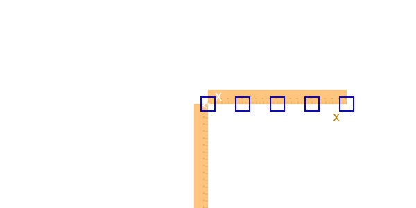
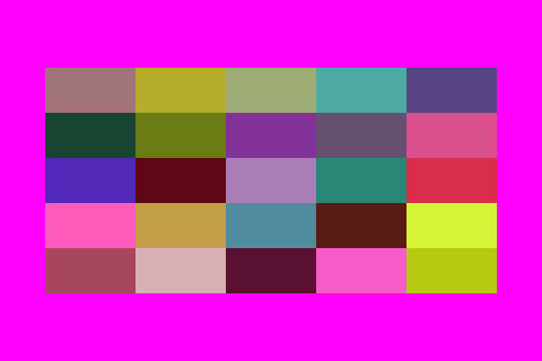
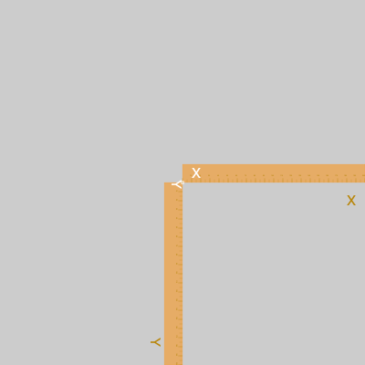
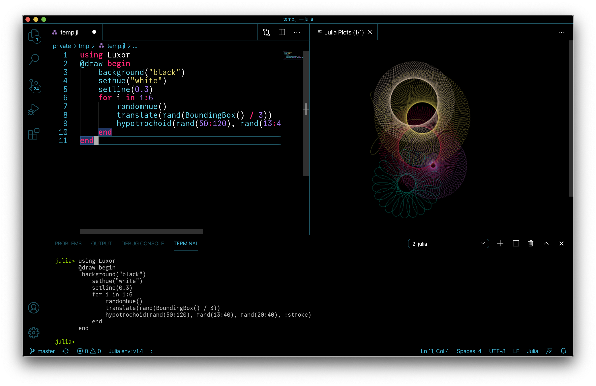
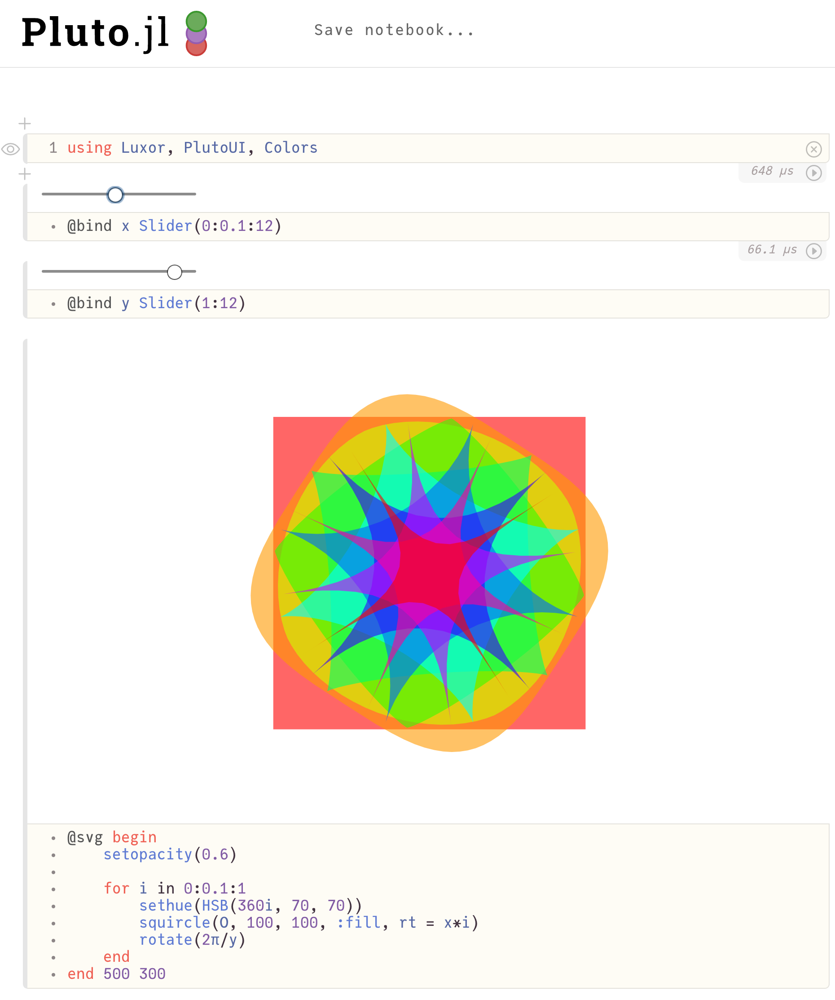

The drawing model
The underlying drawing model is that you build paths, and these are filled and/or stroked, using the current graphics state, which specifies colors, line thicknesses, scale, orientation, opacity, and so on.
You can modify the current graphics state by transforming/rotating/scaling it, setting color and style parameters, and so on. Subsequent graphics use the new state, but the graphics you've already drawn are unchanged.
Many of the drawing functions have an action argument, supplied either as a symbol argument (eg :fill) or as a keyword argument (eg action=:fill). This action determines what happens to the current path. It can be :fill, :stroke, :fillstroke, :fillpreserve, :strokepreserve, :clip, or :path. The default is usually :path, ie. add the graphics to the current path.
The main Julia data types you'll encounter in Luxor are:
| Name of type | Purpose |
|---|---|
| Drawing | holds the current drawing |
| Point | specifies 2D points |
| BoundingBox | defines a bounding box |
| Table | defines a table with different column widths and row heights |
| Partition | defines a table defined by cell width and height |
| Tiler | defines a rectangular grid of tiles |
| BezierPathSegment | a Bezier path segment defined by 4 points |
| BezierPath | contains a series of BezierPathSegments |
| GridRect | defines a rectangular grid |
| GridHex | defines a hexagonal grid |
| Scene | used to define a scene for an animation |
| Turtle | represents a turtle for drawing turtle graphics |
| Path | contains a complete path |
Points and coordinates
You specify points on the drawing surface using Point(x, y).
The default origin (ie the x = 0, y = 0 point) is at the top left corner: the x axis runs left to right across the page, and the y axis runs top to bottom down the page, so Y coordinates increase downwards.
By default, Point(0, 100) is below Point(0, 0).
![](data:image/svg+xml;utf-8,<?xml version="1.0" encoding="UTF-8"?>
<svg xmlns="http://www.w3.org/2000/svg" xmlns:xlink="http://www.w3.org/1999/xlink" width="600pt" height="600pt" viewBox="0 0 600 600" version="1.1">
<defs>
<g>
<symbol overflow="visible" id="glyph0-0">
<path style="stroke:none;" d="M 0.320312 0 L 0.320312 -7.171875 L 6.015625 -7.171875 L 6.015625 0 Z M 5.117188 -0.898438 L 5.117188 -6.273438 L 1.21875 -6.273438 L 1.21875 -0.898438 Z M 5.117188 -0.898438 "/>
</symbol>
<symbol overflow="visible" id="glyph0-1">
<path style="stroke:none;" d="M 2.960938 -7.289062 C 2.449219 -6.296875 2.117188 -5.566406 1.960938 -5.097656 C 1.730469 -4.382812 1.617188 -3.5625 1.617188 -2.625 C 1.617188 -1.683594 1.75 -0.820312 2.011719 -0.0390625 C 2.175781 0.441406 2.496094 1.136719 2.972656 2.039062 L 2.382812 2.039062 C 1.90625 1.296875 1.613281 0.824219 1.5 0.621094 C 1.386719 0.414062 1.261719 0.136719 1.128906 -0.214844 C 0.945312 -0.695312 0.820312 -1.210938 0.746094 -1.757812 C 0.710938 -2.039062 0.695312 -2.3125 0.695312 -2.570312 C 0.695312 -3.53125 0.84375 -4.390625 1.148438 -5.140625 C 1.339844 -5.621094 1.738281 -6.335938 2.347656 -7.289062 Z M 2.960938 -7.289062 "/>
</symbol>
<symbol overflow="visible" id="glyph0-2">
<path style="stroke:none;" d="M 2.703125 -6.992188 C 3.609375 -6.992188 4.265625 -6.621094 4.667969 -5.875 C 4.980469 -5.296875 5.136719 -4.507812 5.136719 -3.507812 C 5.136719 -2.554688 4.996094 -1.769531 4.710938 -1.148438 C 4.300781 -0.257812 3.632812 0.191406 2.699219 0.191406 C 1.859375 0.191406 1.234375 -0.175781 0.824219 -0.902344 C 0.484375 -1.511719 0.3125 -2.328125 0.3125 -3.355469 C 0.3125 -4.148438 0.414062 -4.832031 0.621094 -5.398438 C 1.003906 -6.460938 1.699219 -6.992188 2.703125 -6.992188 Z M 2.695312 -0.609375 C 3.152344 -0.609375 3.515625 -0.8125 3.785156 -1.214844 C 4.054688 -1.617188 4.1875 -2.371094 4.1875 -3.472656 C 4.1875 -4.265625 4.09375 -4.917969 3.898438 -5.433594 C 3.703125 -5.945312 3.320312 -6.203125 2.757812 -6.203125 C 2.242188 -6.203125 1.863281 -5.957031 1.625 -5.472656 C 1.382812 -4.984375 1.265625 -4.265625 1.265625 -3.320312 C 1.265625 -2.609375 1.339844 -2.035156 1.492188 -1.601562 C 1.726562 -0.941406 2.128906 -0.609375 2.695312 -0.609375 Z M 2.695312 -0.609375 "/>
</symbol>
<symbol overflow="visible" id="glyph0-3">
<path style="stroke:none;" d="M 0.828125 1.019531 C 1.054688 0.980469 1.210938 0.824219 1.304688 0.546875 C 1.351562 0.398438 1.375 0.257812 1.375 0.121094 C 1.375 0.0976562 1.375 0.078125 1.375 0.0625 C 1.375 0.0429688 1.367188 0.0234375 1.363281 0 L 0.828125 0 L 0.828125 -1.0625 L 1.875 -1.0625 L 1.875 -0.078125 C 1.875 0.308594 1.796875 0.648438 1.640625 0.941406 C 1.484375 1.234375 1.214844 1.414062 0.828125 1.484375 Z M 0.828125 1.019531 "/>
</symbol>
<symbol overflow="visible" id="glyph0-4">
<g>
</g>
</symbol>
<symbol overflow="visible" id="glyph0-5">
<path style="stroke:none;" d="M 0.347656 2.039062 C 0.863281 1.03125 1.199219 0.296875 1.347656 -0.164062 C 1.574219 -0.867188 1.6875 -1.6875 1.6875 -2.625 C 1.6875 -3.566406 1.558594 -4.429688 1.292969 -5.210938 C 1.132812 -5.691406 0.8125 -6.386719 0.332031 -7.289062 L 0.921875 -7.289062 C 1.421875 -6.488281 1.726562 -5.996094 1.832031 -5.808594 C 1.9375 -5.621094 2.054688 -5.363281 2.179688 -5.035156 C 2.335938 -4.628906 2.445312 -4.226562 2.511719 -3.828125 C 2.578125 -3.429688 2.613281 -3.046875 2.613281 -2.679688 C 2.613281 -1.71875 2.460938 -0.859375 2.152344 -0.101562 C 1.960938 0.382812 1.5625 1.097656 0.957031 2.039062 Z M 0.347656 2.039062 "/>
</symbol>
<symbol overflow="visible" id="glyph0-6">
<path style="stroke:none;" d="M 0.957031 -4.953125 L 0.957031 -5.625 C 1.59375 -5.6875 2.035156 -5.789062 2.285156 -5.933594 C 2.535156 -6.078125 2.722656 -6.421875 2.847656 -6.960938 L 3.539062 -6.960938 L 3.539062 0 L 2.601562 0 L 2.601562 -4.953125 Z M 0.957031 -4.953125 "/>
</symbol>
<symbol overflow="visible" id="glyph1-0">
<path style="stroke:none;" d="M 0.0625 0 L 0.0625 -1.433594 L 1.203125 -1.433594 L 1.203125 0 Z M 1.023438 -0.179688 L 1.023438 -1.253906 L 0.242188 -1.253906 L 0.242188 -0.179688 Z M 1.023438 -0.179688 "/>
</symbol>
<symbol overflow="visible" id="glyph1-1">
<path style="stroke:none;" d="M 0.191406 -0.992188 L 0.191406 -1.125 C 0.320312 -1.136719 0.40625 -1.15625 0.457031 -1.1875 C 0.507812 -1.214844 0.542969 -1.285156 0.570312 -1.390625 L 0.707031 -1.390625 L 0.707031 0 L 0.519531 0 L 0.519531 -0.992188 Z M 0.191406 -0.992188 "/>
</symbol>
<symbol overflow="visible" id="glyph1-2">
<path style="stroke:none;" d="M 0.539062 -1.398438 C 0.722656 -1.398438 0.851562 -1.324219 0.933594 -1.175781 C 0.996094 -1.058594 1.027344 -0.902344 1.027344 -0.703125 C 1.027344 -0.511719 1 -0.355469 0.941406 -0.230469 C 0.859375 -0.0507812 0.726562 0.0390625 0.539062 0.0390625 C 0.371094 0.0390625 0.246094 -0.0351562 0.164062 -0.179688 C 0.0976562 -0.300781 0.0625 -0.464844 0.0625 -0.671875 C 0.0625 -0.828125 0.0820312 -0.964844 0.125 -1.078125 C 0.203125 -1.292969 0.339844 -1.398438 0.539062 -1.398438 Z M 0.539062 -0.121094 C 0.628906 -0.121094 0.703125 -0.164062 0.757812 -0.242188 C 0.8125 -0.324219 0.835938 -0.472656 0.835938 -0.695312 C 0.835938 -0.851562 0.820312 -0.984375 0.78125 -1.085938 C 0.742188 -1.1875 0.664062 -1.242188 0.550781 -1.242188 C 0.449219 -1.242188 0.371094 -1.191406 0.324219 -1.09375 C 0.277344 -0.996094 0.253906 -0.851562 0.253906 -0.664062 C 0.253906 -0.523438 0.269531 -0.40625 0.296875 -0.320312 C 0.34375 -0.1875 0.425781 -0.121094 0.539062 -0.121094 Z M 0.539062 -0.121094 "/>
</symbol>
<symbol overflow="visible" id="glyph1-3">
<path style="stroke:none;" d="M 0.0625 0 C 0.0703125 -0.121094 0.09375 -0.226562 0.136719 -0.3125 C 0.179688 -0.402344 0.265625 -0.484375 0.390625 -0.558594 L 0.578125 -0.664062 C 0.664062 -0.714844 0.722656 -0.757812 0.753906 -0.789062 C 0.808594 -0.84375 0.835938 -0.90625 0.835938 -0.976562 C 0.835938 -1.058594 0.8125 -1.121094 0.761719 -1.171875 C 0.710938 -1.21875 0.648438 -1.242188 0.566406 -1.242188 C 0.445312 -1.242188 0.363281 -1.195312 0.316406 -1.105469 C 0.292969 -1.054688 0.277344 -0.988281 0.273438 -0.902344 L 0.0976562 -0.902344 C 0.0976562 -1.023438 0.121094 -1.125 0.164062 -1.199219 C 0.242188 -1.335938 0.375 -1.402344 0.566406 -1.402344 C 0.726562 -1.402344 0.84375 -1.359375 0.917969 -1.273438 C 0.992188 -1.1875 1.03125 -1.089844 1.03125 -0.984375 C 1.03125 -0.871094 0.988281 -0.777344 0.910156 -0.695312 C 0.867188 -0.648438 0.785156 -0.59375 0.664062 -0.53125 L 0.53125 -0.453125 C 0.46875 -0.417969 0.417969 -0.386719 0.382812 -0.355469 C 0.316406 -0.296875 0.277344 -0.234375 0.257812 -0.164062 L 1.023438 -0.164062 L 1.023438 0 Z M 0.0625 0 "/>
</symbol>
<symbol overflow="visible" id="glyph1-4">
<path style="stroke:none;" d="M 0.519531 0.0390625 C 0.355469 0.0390625 0.234375 -0.0078125 0.160156 -0.0976562 C 0.0859375 -0.1875 0.046875 -0.300781 0.046875 -0.429688 L 0.230469 -0.429688 C 0.238281 -0.339844 0.257812 -0.273438 0.28125 -0.234375 C 0.328125 -0.160156 0.410156 -0.121094 0.53125 -0.121094 C 0.621094 -0.121094 0.695312 -0.148438 0.75 -0.195312 C 0.808594 -0.246094 0.835938 -0.308594 0.835938 -0.386719 C 0.835938 -0.484375 0.804688 -0.550781 0.746094 -0.589844 C 0.6875 -0.628906 0.605469 -0.648438 0.5 -0.648438 C 0.488281 -0.648438 0.476562 -0.648438 0.464844 -0.648438 C 0.453125 -0.648438 0.441406 -0.644531 0.429688 -0.644531 L 0.429688 -0.800781 C 0.449219 -0.796875 0.464844 -0.796875 0.476562 -0.796875 C 0.488281 -0.796875 0.5 -0.796875 0.515625 -0.796875 C 0.582031 -0.796875 0.636719 -0.804688 0.679688 -0.828125 C 0.753906 -0.863281 0.789062 -0.929688 0.789062 -1.023438 C 0.789062 -1.09375 0.765625 -1.144531 0.714844 -1.183594 C 0.664062 -1.222656 0.609375 -1.242188 0.542969 -1.242188 C 0.425781 -1.242188 0.34375 -1.203125 0.296875 -1.125 C 0.273438 -1.082031 0.261719 -1.019531 0.257812 -0.9375 L 0.0820312 -0.9375 C 0.0820312 -1.042969 0.105469 -1.132812 0.144531 -1.203125 C 0.21875 -1.335938 0.34375 -1.398438 0.523438 -1.398438 C 0.664062 -1.398438 0.777344 -1.367188 0.855469 -1.304688 C 0.933594 -1.242188 0.972656 -1.148438 0.972656 -1.03125 C 0.972656 -0.945312 0.949219 -0.875 0.902344 -0.820312 C 0.875 -0.789062 0.835938 -0.761719 0.789062 -0.742188 C 0.863281 -0.722656 0.921875 -0.683594 0.964844 -0.625 C 1.003906 -0.566406 1.023438 -0.496094 1.023438 -0.414062 C 1.023438 -0.28125 0.980469 -0.171875 0.894531 -0.0859375 C 0.804688 -0.00390625 0.679688 0.0390625 0.519531 0.0390625 Z M 0.519531 0.0390625 "/>
</symbol>
<symbol overflow="visible" id="glyph1-5">
<path style="stroke:none;" d="M 0.660156 -0.496094 L 0.660156 -1.128906 L 0.210938 -0.496094 Z M 0.664062 0 L 0.664062 -0.34375 L 0.0507812 -0.34375 L 0.0507812 -0.515625 L 0.691406 -1.402344 L 0.839844 -1.402344 L 0.839844 -0.496094 L 1.046875 -0.496094 L 1.046875 -0.34375 L 0.839844 -0.34375 L 0.839844 0 Z M 0.664062 0 "/>
</symbol>
<symbol overflow="visible" id="glyph1-6">
<path style="stroke:none;" d="M 0.246094 -0.355469 C 0.257812 -0.257812 0.304688 -0.1875 0.386719 -0.148438 C 0.429688 -0.128906 0.476562 -0.117188 0.53125 -0.117188 C 0.636719 -0.117188 0.710938 -0.152344 0.761719 -0.21875 C 0.8125 -0.285156 0.835938 -0.359375 0.835938 -0.4375 C 0.835938 -0.535156 0.808594 -0.613281 0.75 -0.664062 C 0.6875 -0.71875 0.617188 -0.746094 0.535156 -0.746094 C 0.472656 -0.746094 0.421875 -0.734375 0.378906 -0.710938 C 0.335938 -0.6875 0.296875 -0.65625 0.265625 -0.613281 L 0.117188 -0.621094 L 0.222656 -1.375 L 0.949219 -1.375 L 0.949219 -1.203125 L 0.351562 -1.203125 L 0.292969 -0.816406 C 0.328125 -0.839844 0.359375 -0.859375 0.386719 -0.871094 C 0.4375 -0.894531 0.5 -0.90625 0.566406 -0.90625 C 0.695312 -0.90625 0.804688 -0.863281 0.894531 -0.78125 C 0.984375 -0.699219 1.027344 -0.59375 1.027344 -0.464844 C 1.027344 -0.332031 0.988281 -0.21875 0.90625 -0.117188 C 0.824219 -0.015625 0.691406 0.0351562 0.515625 0.0351562 C 0.398438 0.0351562 0.300781 0.00390625 0.210938 -0.0625 C 0.125 -0.125 0.0742188 -0.222656 0.0625 -0.355469 Z M 0.246094 -0.355469 "/>
</symbol>
<symbol overflow="visible" id="glyph1-7">
<path style="stroke:none;" d="M 0.585938 -1.40625 C 0.742188 -1.40625 0.851562 -1.363281 0.910156 -1.28125 C 0.972656 -1.203125 1.003906 -1.117188 1.003906 -1.03125 L 0.828125 -1.03125 C 0.820312 -1.085938 0.804688 -1.132812 0.78125 -1.164062 C 0.738281 -1.222656 0.671875 -1.25 0.585938 -1.25 C 0.488281 -1.25 0.410156 -1.203125 0.351562 -1.113281 C 0.296875 -1.023438 0.261719 -0.894531 0.257812 -0.722656 C 0.296875 -0.78125 0.347656 -0.828125 0.410156 -0.855469 C 0.464844 -0.882812 0.527344 -0.894531 0.597656 -0.894531 C 0.714844 -0.894531 0.816406 -0.859375 0.902344 -0.78125 C 0.992188 -0.707031 1.035156 -0.597656 1.035156 -0.449219 C 1.035156 -0.320312 0.992188 -0.207031 0.910156 -0.109375 C 0.828125 -0.0117188 0.710938 0.0351562 0.554688 0.0351562 C 0.425781 0.0351562 0.3125 -0.0117188 0.21875 -0.113281 C 0.125 -0.210938 0.0742188 -0.378906 0.0742188 -0.613281 C 0.0742188 -0.789062 0.0976562 -0.9375 0.140625 -1.054688 C 0.21875 -1.289062 0.367188 -1.40625 0.585938 -1.40625 Z M 0.570312 -0.121094 C 0.664062 -0.121094 0.734375 -0.152344 0.78125 -0.214844 C 0.828125 -0.277344 0.847656 -0.347656 0.847656 -0.433594 C 0.847656 -0.503906 0.828125 -0.574219 0.789062 -0.636719 C 0.746094 -0.703125 0.671875 -0.734375 0.5625 -0.734375 C 0.488281 -0.734375 0.421875 -0.710938 0.363281 -0.660156 C 0.308594 -0.609375 0.28125 -0.535156 0.28125 -0.433594 C 0.28125 -0.34375 0.304688 -0.269531 0.355469 -0.210938 C 0.40625 -0.148438 0.480469 -0.121094 0.570312 -0.121094 Z M 0.570312 -0.121094 "/>
</symbol>
<symbol overflow="visible" id="glyph1-8">
<path style="stroke:none;" d="M 1.046875 -1.375 L 1.046875 -1.222656 C 1 -1.179688 0.941406 -1.101562 0.867188 -0.992188 C 0.792969 -0.886719 0.726562 -0.769531 0.667969 -0.644531 C 0.613281 -0.523438 0.570312 -0.410156 0.539062 -0.3125 C 0.519531 -0.246094 0.496094 -0.144531 0.46875 0 L 0.273438 0 C 0.316406 -0.265625 0.414062 -0.53125 0.566406 -0.796875 C 0.65625 -0.953125 0.75 -1.085938 0.847656 -1.199219 L 0.0742188 -1.199219 L 0.0742188 -1.375 Z M 1.046875 -1.375 "/>
</symbol>
<symbol overflow="visible" id="glyph1-9">
<path style="stroke:none;" d="M 0.542969 -0.8125 C 0.621094 -0.8125 0.683594 -0.835938 0.726562 -0.878906 C 0.769531 -0.921875 0.789062 -0.972656 0.789062 -1.03125 C 0.789062 -1.085938 0.769531 -1.132812 0.726562 -1.175781 C 0.6875 -1.21875 0.625 -1.242188 0.539062 -1.242188 C 0.453125 -1.242188 0.390625 -1.21875 0.355469 -1.175781 C 0.316406 -1.132812 0.296875 -1.082031 0.296875 -1.023438 C 0.296875 -0.957031 0.320312 -0.90625 0.371094 -0.867188 C 0.421875 -0.832031 0.476562 -0.8125 0.542969 -0.8125 Z M 0.554688 -0.121094 C 0.636719 -0.121094 0.703125 -0.140625 0.757812 -0.1875 C 0.8125 -0.230469 0.835938 -0.296875 0.835938 -0.382812 C 0.835938 -0.472656 0.808594 -0.542969 0.753906 -0.589844 C 0.699219 -0.636719 0.628906 -0.660156 0.542969 -0.660156 C 0.457031 -0.660156 0.390625 -0.636719 0.335938 -0.585938 C 0.28125 -0.539062 0.257812 -0.472656 0.257812 -0.390625 C 0.257812 -0.316406 0.28125 -0.253906 0.328125 -0.199219 C 0.378906 -0.148438 0.453125 -0.121094 0.554688 -0.121094 Z M 0.304688 -0.746094 C 0.257812 -0.765625 0.21875 -0.789062 0.191406 -0.820312 C 0.140625 -0.871094 0.113281 -0.9375 0.113281 -1.023438 C 0.113281 -1.125 0.152344 -1.214844 0.226562 -1.289062 C 0.300781 -1.363281 0.410156 -1.402344 0.546875 -1.402344 C 0.679688 -1.402344 0.789062 -1.367188 0.863281 -1.296875 C 0.9375 -1.226562 0.976562 -1.144531 0.976562 -1.046875 C 0.976562 -0.960938 0.957031 -0.890625 0.910156 -0.835938 C 0.886719 -0.804688 0.847656 -0.777344 0.796875 -0.746094 C 0.855469 -0.71875 0.898438 -0.691406 0.933594 -0.65625 C 0.996094 -0.589844 1.023438 -0.503906 1.023438 -0.402344 C 1.023438 -0.277344 0.984375 -0.175781 0.902344 -0.0898438 C 0.820312 -0.00390625 0.703125 0.0390625 0.550781 0.0390625 C 0.414062 0.0390625 0.300781 0.00390625 0.207031 -0.0703125 C 0.113281 -0.144531 0.0625 -0.25 0.0625 -0.390625 C 0.0625 -0.476562 0.0859375 -0.546875 0.125 -0.605469 C 0.164062 -0.667969 0.226562 -0.714844 0.304688 -0.746094 Z M 0.304688 -0.746094 "/>
</symbol>
<symbol overflow="visible" id="glyph1-10">
<path style="stroke:none;" d="M 0.265625 -0.335938 C 0.269531 -0.242188 0.308594 -0.171875 0.378906 -0.136719 C 0.414062 -0.117188 0.453125 -0.109375 0.5 -0.109375 C 0.582031 -0.109375 0.65625 -0.140625 0.714844 -0.210938 C 0.773438 -0.28125 0.816406 -0.425781 0.839844 -0.640625 C 0.800781 -0.578125 0.753906 -0.535156 0.695312 -0.507812 C 0.636719 -0.484375 0.574219 -0.46875 0.507812 -0.46875 C 0.375 -0.46875 0.265625 -0.511719 0.1875 -0.597656 C 0.109375 -0.679688 0.0703125 -0.789062 0.0703125 -0.921875 C 0.0703125 -1.046875 0.109375 -1.160156 0.1875 -1.257812 C 0.265625 -1.351562 0.378906 -1.398438 0.53125 -1.398438 C 0.734375 -1.398438 0.875 -1.308594 0.953125 -1.125 C 0.996094 -1.023438 1.015625 -0.898438 1.015625 -0.746094 C 1.015625 -0.574219 0.992188 -0.421875 0.9375 -0.289062 C 0.851562 -0.0703125 0.710938 0.0390625 0.507812 0.0390625 C 0.371094 0.0390625 0.265625 0.00390625 0.195312 -0.0703125 C 0.125 -0.140625 0.0859375 -0.230469 0.0859375 -0.335938 Z M 0.53125 -0.625 C 0.601562 -0.625 0.664062 -0.648438 0.722656 -0.695312 C 0.78125 -0.742188 0.808594 -0.820312 0.808594 -0.933594 C 0.808594 -1.039062 0.785156 -1.113281 0.730469 -1.164062 C 0.679688 -1.214844 0.613281 -1.242188 0.535156 -1.242188 C 0.449219 -1.242188 0.378906 -1.210938 0.328125 -1.152344 C 0.277344 -1.09375 0.253906 -1.019531 0.253906 -0.921875 C 0.253906 -0.832031 0.277344 -0.757812 0.320312 -0.707031 C 0.363281 -0.652344 0.433594 -0.625 0.53125 -0.625 Z M 0.53125 -0.625 "/>
</symbol>
<symbol overflow="visible" id="glyph2-0">
<path style="stroke:none;" d="M 0 0.0625 L 1.433594 0.0625 L 1.433594 1.203125 L 0 1.203125 Z M 0.179688 1.023438 L 1.253906 1.023438 L 1.253906 0.242188 L 0.179688 0.242188 Z M 0.179688 1.023438 "/>
</symbol>
<symbol overflow="visible" id="glyph2-1">
<path style="stroke:none;" d="M 0.992188 0.191406 L 1.125 0.191406 C 1.136719 0.316406 1.15625 0.40625 1.1875 0.457031 C 1.214844 0.507812 1.285156 0.542969 1.390625 0.570312 L 1.390625 0.707031 L 0 0.707031 L 0 0.519531 L 0.992188 0.519531 Z M 0.992188 0.191406 "/>
</symbol>
<symbol overflow="visible" id="glyph2-2">
<path style="stroke:none;" d="M 1.398438 0.539062 C 1.398438 0.722656 1.324219 0.851562 1.175781 0.933594 C 1.058594 0.996094 0.902344 1.027344 0.703125 1.027344 C 0.511719 1.027344 0.355469 1 0.230469 0.941406 C 0.0507812 0.859375 -0.0390625 0.726562 -0.0390625 0.539062 C -0.0390625 0.371094 0.0351562 0.246094 0.179688 0.164062 C 0.300781 0.0976562 0.464844 0.0625 0.671875 0.0625 C 0.828125 0.0625 0.964844 0.0820312 1.078125 0.125 C 1.292969 0.199219 1.398438 0.339844 1.398438 0.539062 Z M 0.121094 0.539062 C 0.121094 0.628906 0.164062 0.703125 0.242188 0.757812 C 0.324219 0.8125 0.472656 0.835938 0.695312 0.835938 C 0.851562 0.835938 0.984375 0.816406 1.085938 0.777344 C 1.1875 0.738281 1.242188 0.664062 1.242188 0.550781 C 1.242188 0.449219 1.191406 0.371094 1.09375 0.324219 C 0.996094 0.277344 0.851562 0.253906 0.664062 0.253906 C 0.523438 0.253906 0.40625 0.269531 0.320312 0.296875 C 0.1875 0.34375 0.121094 0.425781 0.121094 0.539062 Z M 0.121094 0.539062 "/>
</symbol>
<symbol overflow="visible" id="glyph2-3">
<path style="stroke:none;" d="M 0 0.0625 C 0.121094 0.0703125 0.226562 0.09375 0.3125 0.136719 C 0.402344 0.179688 0.484375 0.265625 0.558594 0.390625 L 0.664062 0.578125 C 0.714844 0.664062 0.757812 0.722656 0.789062 0.753906 C 0.84375 0.808594 0.90625 0.835938 0.976562 0.835938 C 1.058594 0.835938 1.121094 0.808594 1.171875 0.761719 C 1.21875 0.710938 1.242188 0.648438 1.242188 0.566406 C 1.242188 0.445312 1.195312 0.363281 1.105469 0.316406 C 1.054688 0.292969 0.988281 0.277344 0.902344 0.273438 L 0.902344 0.0976562 C 1.023438 0.0976562 1.125 0.121094 1.199219 0.164062 C 1.335938 0.238281 1.402344 0.375 1.402344 0.566406 C 1.402344 0.726562 1.359375 0.84375 1.273438 0.917969 C 1.1875 0.992188 1.089844 1.03125 0.984375 1.03125 C 0.871094 1.03125 0.777344 0.988281 0.699219 0.910156 C 0.652344 0.867188 0.59375 0.785156 0.53125 0.664062 L 0.457031 0.53125 C 0.421875 0.46875 0.386719 0.417969 0.355469 0.382812 C 0.296875 0.316406 0.234375 0.277344 0.167969 0.257812 L 0.167969 1.023438 L 0 1.023438 Z M 0 0.0625 "/>
</symbol>
<symbol overflow="visible" id="glyph2-4">
<path style="stroke:none;" d="M -0.0390625 0.519531 C -0.0390625 0.355469 0.0078125 0.234375 0.0976562 0.160156 C 0.1875 0.0859375 0.300781 0.046875 0.429688 0.046875 L 0.429688 0.230469 C 0.339844 0.238281 0.273438 0.257812 0.234375 0.28125 C 0.160156 0.328125 0.121094 0.410156 0.121094 0.53125 C 0.121094 0.621094 0.148438 0.695312 0.195312 0.75 C 0.246094 0.808594 0.308594 0.835938 0.386719 0.835938 C 0.484375 0.835938 0.550781 0.804688 0.589844 0.746094 C 0.628906 0.6875 0.648438 0.605469 0.648438 0.5 C 0.648438 0.488281 0.648438 0.476562 0.648438 0.464844 C 0.648438 0.453125 0.644531 0.441406 0.644531 0.429688 L 0.800781 0.429688 C 0.796875 0.449219 0.796875 0.464844 0.796875 0.476562 C 0.796875 0.488281 0.796875 0.5 0.796875 0.515625 C 0.796875 0.582031 0.804688 0.636719 0.828125 0.679688 C 0.863281 0.753906 0.929688 0.789062 1.023438 0.789062 C 1.09375 0.789062 1.144531 0.765625 1.183594 0.714844 C 1.222656 0.664062 1.242188 0.609375 1.242188 0.542969 C 1.242188 0.425781 1.203125 0.34375 1.125 0.296875 C 1.082031 0.273438 1.019531 0.261719 0.9375 0.257812 L 0.9375 0.0820312 C 1.042969 0.0820312 1.132812 0.105469 1.203125 0.144531 C 1.335938 0.214844 1.398438 0.34375 1.398438 0.523438 C 1.398438 0.664062 1.367188 0.777344 1.304688 0.855469 C 1.242188 0.933594 1.148438 0.972656 1.03125 0.972656 C 0.945312 0.972656 0.875 0.949219 0.820312 0.902344 C 0.789062 0.875 0.761719 0.835938 0.742188 0.789062 C 0.722656 0.863281 0.683594 0.921875 0.625 0.964844 C 0.566406 1.003906 0.496094 1.023438 0.414062 1.023438 C 0.28125 1.023438 0.171875 0.980469 0.0898438 0.894531 C 0.00390625 0.804688 -0.0390625 0.679688 -0.0390625 0.519531 Z M -0.0390625 0.519531 "/>
</symbol>
<symbol overflow="visible" id="glyph2-5">
<path style="stroke:none;" d="M 0.496094 0.660156 L 1.128906 0.660156 L 0.496094 0.210938 Z M 0 0.664062 L 0.34375 0.664062 L 0.34375 0.0507812 L 0.515625 0.0507812 L 1.402344 0.691406 L 1.402344 0.839844 L 0.496094 0.839844 L 0.496094 1.046875 L 0.34375 1.046875 L 0.34375 0.839844 L 0 0.839844 Z M 0 0.664062 "/>
</symbol>
<symbol overflow="visible" id="glyph2-6">
<path style="stroke:none;" d="M 0.355469 0.246094 C 0.257812 0.257812 0.1875 0.304688 0.148438 0.386719 C 0.128906 0.429688 0.121094 0.476562 0.121094 0.53125 C 0.121094 0.636719 0.152344 0.710938 0.21875 0.761719 C 0.285156 0.8125 0.359375 0.835938 0.441406 0.835938 C 0.539062 0.835938 0.613281 0.808594 0.664062 0.75 C 0.71875 0.6875 0.746094 0.617188 0.746094 0.535156 C 0.746094 0.472656 0.734375 0.421875 0.710938 0.378906 C 0.6875 0.335938 0.65625 0.296875 0.613281 0.265625 L 0.621094 0.113281 L 1.375 0.222656 L 1.375 0.949219 L 1.203125 0.949219 L 1.203125 0.351562 L 0.816406 0.292969 C 0.839844 0.324219 0.859375 0.355469 0.871094 0.386719 C 0.894531 0.4375 0.90625 0.5 0.90625 0.566406 C 0.90625 0.695312 0.863281 0.804688 0.78125 0.894531 C 0.699219 0.984375 0.59375 1.027344 0.464844 1.027344 C 0.332031 1.027344 0.21875 0.988281 0.117188 0.90625 C 0.015625 0.824219 -0.0351562 0.691406 -0.0351562 0.515625 C -0.0351562 0.398438 -0.00390625 0.300781 0.0625 0.210938 C 0.125 0.125 0.222656 0.0742188 0.355469 0.0625 Z M 0.355469 0.246094 "/>
</symbol>
<symbol overflow="visible" id="glyph2-7">
<path style="stroke:none;" d="M 1.40625 0.585938 C 1.40625 0.742188 1.363281 0.851562 1.28125 0.910156 C 1.203125 0.972656 1.117188 1.003906 1.03125 1.003906 L 1.03125 0.828125 C 1.085938 0.820312 1.132812 0.804688 1.164062 0.78125 C 1.222656 0.738281 1.25 0.671875 1.25 0.585938 C 1.25 0.488281 1.203125 0.410156 1.113281 0.351562 C 1.023438 0.292969 0.894531 0.261719 0.722656 0.257812 C 0.78125 0.296875 0.828125 0.347656 0.855469 0.410156 C 0.882812 0.464844 0.894531 0.527344 0.894531 0.597656 C 0.894531 0.714844 0.859375 0.816406 0.78125 0.902344 C 0.707031 0.992188 0.597656 1.035156 0.449219 1.035156 C 0.320312 1.035156 0.207031 0.992188 0.109375 0.910156 C 0.0117188 0.828125 -0.0351562 0.710938 -0.0351562 0.554688 C -0.0351562 0.425781 0.0117188 0.3125 0.113281 0.21875 C 0.210938 0.125 0.378906 0.0742188 0.613281 0.0742188 C 0.789062 0.0742188 0.9375 0.0976562 1.054688 0.136719 C 1.289062 0.21875 1.40625 0.367188 1.40625 0.585938 Z M 0.121094 0.570312 C 0.121094 0.664062 0.152344 0.734375 0.214844 0.78125 C 0.277344 0.828125 0.347656 0.847656 0.433594 0.847656 C 0.503906 0.847656 0.574219 0.828125 0.636719 0.789062 C 0.703125 0.746094 0.734375 0.671875 0.734375 0.5625 C 0.734375 0.488281 0.710938 0.421875 0.660156 0.363281 C 0.609375 0.308594 0.535156 0.277344 0.433594 0.28125 C 0.34375 0.28125 0.269531 0.304688 0.210938 0.355469 C 0.152344 0.40625 0.121094 0.480469 0.121094 0.570312 Z M 0.121094 0.570312 "/>
</symbol>
<symbol overflow="visible" id="glyph2-8">
<path style="stroke:none;" d="M 1.375 1.046875 L 1.222656 1.046875 C 1.179688 1 1.101562 0.941406 0.992188 0.867188 C 0.886719 0.792969 0.769531 0.726562 0.644531 0.667969 C 0.523438 0.613281 0.410156 0.570312 0.3125 0.539062 C 0.246094 0.519531 0.144531 0.496094 0 0.46875 L 0 0.273438 C 0.265625 0.316406 0.53125 0.414062 0.796875 0.566406 C 0.953125 0.65625 1.085938 0.75 1.199219 0.847656 L 1.199219 0.0742188 L 1.375 0.0742188 Z M 1.375 1.046875 "/>
</symbol>
<symbol overflow="visible" id="glyph2-9">
<path style="stroke:none;" d="M 0.8125 0.542969 C 0.8125 0.621094 0.835938 0.683594 0.878906 0.726562 C 0.921875 0.769531 0.972656 0.789062 1.03125 0.789062 C 1.085938 0.789062 1.132812 0.769531 1.175781 0.726562 C 1.21875 0.6875 1.242188 0.625 1.242188 0.539062 C 1.242188 0.453125 1.21875 0.390625 1.175781 0.355469 C 1.132812 0.316406 1.082031 0.296875 1.023438 0.296875 C 0.957031 0.296875 0.90625 0.320312 0.867188 0.371094 C 0.832031 0.421875 0.8125 0.476562 0.8125 0.542969 Z M 0.121094 0.554688 C 0.121094 0.636719 0.140625 0.703125 0.1875 0.757812 C 0.230469 0.8125 0.296875 0.835938 0.382812 0.835938 C 0.472656 0.835938 0.542969 0.808594 0.589844 0.753906 C 0.636719 0.699219 0.660156 0.628906 0.660156 0.542969 C 0.660156 0.457031 0.636719 0.390625 0.585938 0.335938 C 0.539062 0.28125 0.472656 0.257812 0.390625 0.257812 C 0.316406 0.257812 0.253906 0.28125 0.199219 0.328125 C 0.148438 0.378906 0.121094 0.453125 0.121094 0.554688 Z M 0.746094 0.304688 C 0.765625 0.253906 0.789062 0.21875 0.820312 0.191406 C 0.871094 0.140625 0.9375 0.113281 1.023438 0.113281 C 1.125 0.113281 1.214844 0.152344 1.289062 0.226562 C 1.363281 0.300781 1.402344 0.410156 1.402344 0.546875 C 1.402344 0.679688 1.367188 0.785156 1.296875 0.863281 C 1.226562 0.9375 1.144531 0.976562 1.046875 0.976562 C 0.960938 0.976562 0.890625 0.957031 0.835938 0.910156 C 0.804688 0.886719 0.777344 0.847656 0.746094 0.796875 C 0.71875 0.855469 0.691406 0.898438 0.65625 0.933594 C 0.589844 0.996094 0.503906 1.023438 0.402344 1.023438 C 0.277344 1.023438 0.175781 0.984375 0.0898438 0.902344 C 0.00390625 0.820312 -0.0390625 0.703125 -0.0390625 0.550781 C -0.0390625 0.414062 -0.00390625 0.300781 0.0703125 0.207031 C 0.144531 0.113281 0.25 0.0625 0.390625 0.0625 C 0.476562 0.0625 0.546875 0.0859375 0.605469 0.125 C 0.667969 0.164062 0.714844 0.226562 0.746094 0.304688 Z M 0.746094 0.304688 "/>
</symbol>
<symbol overflow="visible" id="glyph2-10">
<path style="stroke:none;" d="M 0.335938 0.265625 C 0.242188 0.269531 0.175781 0.308594 0.136719 0.378906 C 0.117188 0.414062 0.109375 0.453125 0.109375 0.5 C 0.109375 0.582031 0.140625 0.65625 0.210938 0.714844 C 0.28125 0.773438 0.425781 0.816406 0.640625 0.839844 C 0.578125 0.800781 0.535156 0.753906 0.507812 0.695312 C 0.484375 0.636719 0.472656 0.574219 0.472656 0.507812 C 0.472656 0.375 0.511719 0.265625 0.597656 0.1875 C 0.679688 0.109375 0.789062 0.0703125 0.921875 0.0703125 C 1.046875 0.0703125 1.160156 0.109375 1.257812 0.1875 C 1.351562 0.265625 1.398438 0.378906 1.398438 0.53125 C 1.398438 0.734375 1.308594 0.875 1.125 0.953125 C 1.023438 0.996094 0.898438 1.015625 0.746094 1.015625 C 0.574219 1.015625 0.421875 0.992188 0.292969 0.9375 C 0.0703125 0.851562 -0.0390625 0.710938 -0.0390625 0.507812 C -0.0390625 0.371094 -0.00390625 0.265625 0.0703125 0.195312 C 0.140625 0.125 0.230469 0.0859375 0.335938 0.0859375 Z M 0.625 0.53125 C 0.625 0.601562 0.648438 0.664062 0.695312 0.722656 C 0.742188 0.78125 0.820312 0.808594 0.933594 0.808594 C 1.039062 0.808594 1.113281 0.785156 1.164062 0.730469 C 1.214844 0.679688 1.242188 0.613281 1.242188 0.535156 C 1.242188 0.449219 1.210938 0.378906 1.152344 0.328125 C 1.09375 0.277344 1.019531 0.253906 0.921875 0.253906 C 0.832031 0.253906 0.757812 0.277344 0.707031 0.320312 C 0.652344 0.363281 0.625 0.433594 0.625 0.53125 Z M 0.625 0.53125 "/>
</symbol>
<symbol overflow="visible" id="glyph3-0">
<path style="stroke:none;" d="M 0.484375 0 L 0.484375 -10.757812 L 9.023438 -10.757812 L 9.023438 0 Z M 7.675781 -1.347656 L 7.675781 -9.410156 L 1.832031 -9.410156 L 1.832031 -1.347656 Z M 7.675781 -1.347656 "/>
</symbol>
<symbol overflow="visible" id="glyph3-1">
<path style="stroke:none;" d="M 2.066406 0 L 0.308594 0 L 4.160156 -5.515625 L 0.550781 -10.757812 L 2.375 -10.757812 L 5.121094 -6.644531 L 7.84375 -10.757812 L 9.578125 -10.757812 L 5.96875 -5.515625 L 9.757812 0 L 7.945312 0 L 5.046875 -4.421875 Z M 2.066406 0 "/>
</symbol>
<symbol overflow="visible" id="glyph4-0">
<path style="stroke:none;" d="M 0 0.484375 L 10.757812 0.484375 L 10.757812 9.023438 L 0 9.023438 Z M 1.347656 7.675781 L 9.410156 7.675781 L 9.410156 1.832031 L 1.347656 1.832031 Z M 1.347656 7.675781 "/>
</symbol>
<symbol overflow="visible" id="glyph4-1">
<path style="stroke:none;" d="M 10.757812 0.308594 L 10.757812 2.007812 L 5.589844 5.097656 L 10.757812 8.1875 L 10.757812 9.894531 L 4.335938 5.828125 L 0 5.828125 L 0 4.371094 L 4.335938 4.371094 Z M 10.757812 0.308594 "/>
</symbol>
</g>
</defs>
<g id="surface40">
<path style=" stroke:none;fill-rule:nonzero;fill:rgb(98.039216%25,92.156863%25,84.313725%25);fill-opacity:1;" d="M 40 560 L 40 40 L 560 40 L 560 560 Z M 40 560 "/>
<path style=" stroke:none;fill-rule:nonzero;fill:rgb(0%25,0%25,0%25);fill-opacity:1;" d="M 46 40 C 46 43.3125 43.3125 46 40 46 C 36.6875 46 34 43.3125 34 40 C 34 36.6875 36.6875 34 40 34 C 43.3125 34 46 36.6875 46 40 "/>
<g style="fill:rgb(0%25,0%25,0%25);fill-opacity:1;">
<use xlink:href="%23glyph0-1" x="50.606602" y="57.896641"/>
<use xlink:href="%23glyph0-2" x="53.93668" y="57.896641"/>
<use xlink:href="%23glyph0-3" x="59.498203" y="57.896641"/>
<use xlink:href="%23glyph0-4" x="62.276524" y="57.896641"/>
<use xlink:href="%23glyph0-2" x="65.054844" y="57.896641"/>
<use xlink:href="%23glyph0-5" x="70.616367" y="57.896641"/>
</g>
<path style=" stroke:none;fill-rule:nonzero;fill:rgb(0%25,0%25,0%25);fill-opacity:1;" d="M 46 140 C 46 143.3125 43.3125 146 40 146 C 36.6875 146 34 143.3125 34 140 C 34 136.6875 36.6875 134 40 134 C 43.3125 134 46 136.6875 46 140 "/>
<g style="fill:rgb(0%25,0%25,0%25);fill-opacity:1;">
<use xlink:href="%23glyph0-1" x="50.606602" y="157.896641"/>
<use xlink:href="%23glyph0-2" x="53.93668" y="157.896641"/>
<use xlink:href="%23glyph0-3" x="59.498203" y="157.896641"/>
<use xlink:href="%23glyph0-4" x="62.276524" y="157.896641"/>
<use xlink:href="%23glyph0-6" x="65.054844" y="157.896641"/>
<use xlink:href="%23glyph0-2" x="70.616367" y="157.896641"/>
<use xlink:href="%23glyph0-2" x="76.177891" y="157.896641"/>
<use xlink:href="%23glyph0-5" x="81.739414" y="157.896641"/>
</g>
<path style="fill-rule:nonzero;fill:rgb(100%25,54.9%25,0%25);fill-opacity:0.5;stroke-width:0.25;stroke-linecap:butt;stroke-linejoin:miter;stroke:rgb(100%25,54.9%25,0%25);stroke-opacity:0.5;stroke-miterlimit:10;" d="M 40 40 L 40 20 L 240 20 L 240 40 Z M 40 40 "/>
<path style="fill-rule:nonzero;fill:rgb(100%25,54.9%25,0%25);fill-opacity:0.5;stroke-width:0.25;stroke-linecap:butt;stroke-linejoin:miter;stroke:rgb(100%25,54.9%25,0%25);stroke-opacity:0.5;stroke-miterlimit:10;" d="M 20 240 L 20 40 L 40 40 L 40 240 Z M 20 240 "/>
<path style="fill:none;stroke-width:0.25;stroke-linecap:butt;stroke-linejoin:miter;stroke:rgb(72.2%25,52.5%25,4.3%25);stroke-opacity:1;stroke-miterlimit:10;" d="M 40 40 L 40 35 "/>
<path style="fill:none;stroke-width:0.25;stroke-linecap:butt;stroke-linejoin:miter;stroke:rgb(72.2%25,52.5%25,4.3%25);stroke-opacity:1;stroke-miterlimit:10;" d="M 50 40 L 50 35 "/>
<path style="fill:none;stroke-width:0.25;stroke-linecap:butt;stroke-linejoin:miter;stroke:rgb(72.2%25,52.5%25,4.3%25);stroke-opacity:1;stroke-miterlimit:10;" d="M 60 40 L 60 35 "/>
<path style="fill:none;stroke-width:0.25;stroke-linecap:butt;stroke-linejoin:miter;stroke:rgb(72.2%25,52.5%25,4.3%25);stroke-opacity:1;stroke-miterlimit:10;" d="M 70 40 L 70 35 "/>
<path style="fill:none;stroke-width:0.25;stroke-linecap:butt;stroke-linejoin:miter;stroke:rgb(72.2%25,52.5%25,4.3%25);stroke-opacity:1;stroke-miterlimit:10;" d="M 80 40 L 80 35 "/>
<path style="fill:none;stroke-width:0.25;stroke-linecap:butt;stroke-linejoin:miter;stroke:rgb(72.2%25,52.5%25,4.3%25);stroke-opacity:1;stroke-miterlimit:10;" d="M 90 40 L 90 35 "/>
<path style="fill:none;stroke-width:0.25;stroke-linecap:butt;stroke-linejoin:miter;stroke:rgb(72.2%25,52.5%25,4.3%25);stroke-opacity:1;stroke-miterlimit:10;" d="M 100 40 L 100 35 "/>
<path style="fill:none;stroke-width:0.25;stroke-linecap:butt;stroke-linejoin:miter;stroke:rgb(72.2%25,52.5%25,4.3%25);stroke-opacity:1;stroke-miterlimit:10;" d="M 110 40 L 110 35 "/>
<path style="fill:none;stroke-width:0.25;stroke-linecap:butt;stroke-linejoin:miter;stroke:rgb(72.2%25,52.5%25,4.3%25);stroke-opacity:1;stroke-miterlimit:10;" d="M 120 40 L 120 35 "/>
<path style="fill:none;stroke-width:0.25;stroke-linecap:butt;stroke-linejoin:miter;stroke:rgb(72.2%25,52.5%25,4.3%25);stroke-opacity:1;stroke-miterlimit:10;" d="M 130 40 L 130 35 "/>
<path style="fill:none;stroke-width:0.25;stroke-linecap:butt;stroke-linejoin:miter;stroke:rgb(72.2%25,52.5%25,4.3%25);stroke-opacity:1;stroke-miterlimit:10;" d="M 140 40 L 140 35 "/>
<path style="fill:none;stroke-width:0.25;stroke-linecap:butt;stroke-linejoin:miter;stroke:rgb(72.2%25,52.5%25,4.3%25);stroke-opacity:1;stroke-miterlimit:10;" d="M 150 40 L 150 35 "/>
<path style="fill:none;stroke-width:0.25;stroke-linecap:butt;stroke-linejoin:miter;stroke:rgb(72.2%25,52.5%25,4.3%25);stroke-opacity:1;stroke-miterlimit:10;" d="M 160 40 L 160 35 "/>
<path style="fill:none;stroke-width:0.25;stroke-linecap:butt;stroke-linejoin:miter;stroke:rgb(72.2%25,52.5%25,4.3%25);stroke-opacity:1;stroke-miterlimit:10;" d="M 170 40 L 170 35 "/>
<path style="fill:none;stroke-width:0.25;stroke-linecap:butt;stroke-linejoin:miter;stroke:rgb(72.2%25,52.5%25,4.3%25);stroke-opacity:1;stroke-miterlimit:10;" d="M 180 40 L 180 35 "/>
<path style="fill:none;stroke-width:0.25;stroke-linecap:butt;stroke-linejoin:miter;stroke:rgb(72.2%25,52.5%25,4.3%25);stroke-opacity:1;stroke-miterlimit:10;" d="M 190 40 L 190 35 "/>
<path style="fill:none;stroke-width:0.25;stroke-linecap:butt;stroke-linejoin:miter;stroke:rgb(72.2%25,52.5%25,4.3%25);stroke-opacity:1;stroke-miterlimit:10;" d="M 200 40 L 200 35 "/>
<path style="fill:none;stroke-width:0.25;stroke-linecap:butt;stroke-linejoin:miter;stroke:rgb(72.2%25,52.5%25,4.3%25);stroke-opacity:1;stroke-miterlimit:10;" d="M 210 40 L 210 35 "/>
<path style="fill:none;stroke-width:0.25;stroke-linecap:butt;stroke-linejoin:miter;stroke:rgb(72.2%25,52.5%25,4.3%25);stroke-opacity:1;stroke-miterlimit:10;" d="M 220 40 L 220 35 "/>
<path style="fill:none;stroke-width:0.25;stroke-linecap:butt;stroke-linejoin:miter;stroke:rgb(72.2%25,52.5%25,4.3%25);stroke-opacity:1;stroke-miterlimit:10;" d="M 230 40 L 230 35 "/>
<path style="fill:none;stroke-width:0.25;stroke-linecap:butt;stroke-linejoin:miter;stroke:rgb(72.2%25,52.5%25,4.3%25);stroke-opacity:1;stroke-miterlimit:10;" d="M 240 40 L 240 35 "/>
<path style="fill:none;stroke-width:0.25;stroke-linecap:butt;stroke-linejoin:miter;stroke:rgb(72.2%25,52.5%25,4.3%25);stroke-opacity:1;stroke-miterlimit:10;" d="M 35 40 L 40 40 "/>
<path style="fill:none;stroke-width:0.25;stroke-linecap:butt;stroke-linejoin:miter;stroke:rgb(72.2%25,52.5%25,4.3%25);stroke-opacity:1;stroke-miterlimit:10;" d="M 35 50 L 40 50 "/>
<path style="fill:none;stroke-width:0.25;stroke-linecap:butt;stroke-linejoin:miter;stroke:rgb(72.2%25,52.5%25,4.3%25);stroke-opacity:1;stroke-miterlimit:10;" d="M 35 60 L 40 60 "/>
<path style="fill:none;stroke-width:0.25;stroke-linecap:butt;stroke-linejoin:miter;stroke:rgb(72.2%25,52.5%25,4.3%25);stroke-opacity:1;stroke-miterlimit:10;" d="M 35 70 L 40 70 "/>
<path style="fill:none;stroke-width:0.25;stroke-linecap:butt;stroke-linejoin:miter;stroke:rgb(72.2%25,52.5%25,4.3%25);stroke-opacity:1;stroke-miterlimit:10;" d="M 35 80 L 40 80 "/>
<path style="fill:none;stroke-width:0.25;stroke-linecap:butt;stroke-linejoin:miter;stroke:rgb(72.2%25,52.5%25,4.3%25);stroke-opacity:1;stroke-miterlimit:10;" d="M 35 90 L 40 90 "/>
<path style="fill:none;stroke-width:0.25;stroke-linecap:butt;stroke-linejoin:miter;stroke:rgb(72.2%25,52.5%25,4.3%25);stroke-opacity:1;stroke-miterlimit:10;" d="M 35 100 L 40 100 "/>
<path style="fill:none;stroke-width:0.25;stroke-linecap:butt;stroke-linejoin:miter;stroke:rgb(72.2%25,52.5%25,4.3%25);stroke-opacity:1;stroke-miterlimit:10;" d="M 35 110 L 40 110 "/>
<path style="fill:none;stroke-width:0.25;stroke-linecap:butt;stroke-linejoin:miter;stroke:rgb(72.2%25,52.5%25,4.3%25);stroke-opacity:1;stroke-miterlimit:10;" d="M 35 120 L 40 120 "/>
<path style="fill:none;stroke-width:0.25;stroke-linecap:butt;stroke-linejoin:miter;stroke:rgb(72.2%25,52.5%25,4.3%25);stroke-opacity:1;stroke-miterlimit:10;" d="M 35 130 L 40 130 "/>
<path style="fill:none;stroke-width:0.25;stroke-linecap:butt;stroke-linejoin:miter;stroke:rgb(72.2%25,52.5%25,4.3%25);stroke-opacity:1;stroke-miterlimit:10;" d="M 35 140 L 40 140 "/>
<path style="fill:none;stroke-width:0.25;stroke-linecap:butt;stroke-linejoin:miter;stroke:rgb(72.2%25,52.5%25,4.3%25);stroke-opacity:1;stroke-miterlimit:10;" d="M 35 150 L 40 150 "/>
<path style="fill:none;stroke-width:0.25;stroke-linecap:butt;stroke-linejoin:miter;stroke:rgb(72.2%25,52.5%25,4.3%25);stroke-opacity:1;stroke-miterlimit:10;" d="M 35 160 L 40 160 "/>
<path style="fill:none;stroke-width:0.25;stroke-linecap:butt;stroke-linejoin:miter;stroke:rgb(72.2%25,52.5%25,4.3%25);stroke-opacity:1;stroke-miterlimit:10;" d="M 35 170 L 40 170 "/>
<path style="fill:none;stroke-width:0.25;stroke-linecap:butt;stroke-linejoin:miter;stroke:rgb(72.2%25,52.5%25,4.3%25);stroke-opacity:1;stroke-miterlimit:10;" d="M 35 180 L 40 180 "/>
<path style="fill:none;stroke-width:0.25;stroke-linecap:butt;stroke-linejoin:miter;stroke:rgb(72.2%25,52.5%25,4.3%25);stroke-opacity:1;stroke-miterlimit:10;" d="M 35 190 L 40 190 "/>
<path style="fill:none;stroke-width:0.25;stroke-linecap:butt;stroke-linejoin:miter;stroke:rgb(72.2%25,52.5%25,4.3%25);stroke-opacity:1;stroke-miterlimit:10;" d="M 35 200 L 40 200 "/>
<path style="fill:none;stroke-width:0.25;stroke-linecap:butt;stroke-linejoin:miter;stroke:rgb(72.2%25,52.5%25,4.3%25);stroke-opacity:1;stroke-miterlimit:10;" d="M 35 210 L 40 210 "/>
<path style="fill:none;stroke-width:0.25;stroke-linecap:butt;stroke-linejoin:miter;stroke:rgb(72.2%25,52.5%25,4.3%25);stroke-opacity:1;stroke-miterlimit:10;" d="M 35 220 L 40 220 "/>
<path style="fill:none;stroke-width:0.25;stroke-linecap:butt;stroke-linejoin:miter;stroke:rgb(72.2%25,52.5%25,4.3%25);stroke-opacity:1;stroke-miterlimit:10;" d="M 35 230 L 40 230 "/>
<path style="fill:none;stroke-width:0.25;stroke-linecap:butt;stroke-linejoin:miter;stroke:rgb(72.2%25,52.5%25,4.3%25);stroke-opacity:1;stroke-miterlimit:10;" d="M 35 240 L 40 240 "/>
<path style="fill:none;stroke-width:0.25;stroke-linecap:butt;stroke-linejoin:miter;stroke:rgb(72.2%25,52.5%25,4.3%25);stroke-opacity:1;stroke-miterlimit:10;" d="M 40 40 L 40 36.667969 "/>
<path style="fill:none;stroke-width:0.25;stroke-linecap:butt;stroke-linejoin:miter;stroke:rgb(72.2%25,52.5%25,4.3%25);stroke-opacity:1;stroke-miterlimit:10;" d="M 45 40 L 45 36.667969 "/>
<path style="fill:none;stroke-width:0.25;stroke-linecap:butt;stroke-linejoin:miter;stroke:rgb(72.2%25,52.5%25,4.3%25);stroke-opacity:1;stroke-miterlimit:10;" d="M 50 40 L 50 36.667969 "/>
<path style="fill:none;stroke-width:0.25;stroke-linecap:butt;stroke-linejoin:miter;stroke:rgb(72.2%25,52.5%25,4.3%25);stroke-opacity:1;stroke-miterlimit:10;" d="M 55 40 L 55 36.667969 "/>
<path style="fill:none;stroke-width:0.25;stroke-linecap:butt;stroke-linejoin:miter;stroke:rgb(72.2%25,52.5%25,4.3%25);stroke-opacity:1;stroke-miterlimit:10;" d="M 60 40 L 60 36.667969 "/>
<path style="fill:none;stroke-width:0.25;stroke-linecap:butt;stroke-linejoin:miter;stroke:rgb(72.2%25,52.5%25,4.3%25);stroke-opacity:1;stroke-miterlimit:10;" d="M 65 40 L 65 36.667969 "/>
<path style="fill:none;stroke-width:0.25;stroke-linecap:butt;stroke-linejoin:miter;stroke:rgb(72.2%25,52.5%25,4.3%25);stroke-opacity:1;stroke-miterlimit:10;" d="M 70 40 L 70 36.667969 "/>
<path style="fill:none;stroke-width:0.25;stroke-linecap:butt;stroke-linejoin:miter;stroke:rgb(72.2%25,52.5%25,4.3%25);stroke-opacity:1;stroke-miterlimit:10;" d="M 75 40 L 75 36.667969 "/>
<path style="fill:none;stroke-width:0.25;stroke-linecap:butt;stroke-linejoin:miter;stroke:rgb(72.2%25,52.5%25,4.3%25);stroke-opacity:1;stroke-miterlimit:10;" d="M 80 40 L 80 36.667969 "/>
<path style="fill:none;stroke-width:0.25;stroke-linecap:butt;stroke-linejoin:miter;stroke:rgb(72.2%25,52.5%25,4.3%25);stroke-opacity:1;stroke-miterlimit:10;" d="M 85 40 L 85 36.667969 "/>
<path style="fill:none;stroke-width:0.25;stroke-linecap:butt;stroke-linejoin:miter;stroke:rgb(72.2%25,52.5%25,4.3%25);stroke-opacity:1;stroke-miterlimit:10;" d="M 90 40 L 90 36.667969 "/>
<path style="fill:none;stroke-width:0.25;stroke-linecap:butt;stroke-linejoin:miter;stroke:rgb(72.2%25,52.5%25,4.3%25);stroke-opacity:1;stroke-miterlimit:10;" d="M 95 40 L 95 36.667969 "/>
<path style="fill:none;stroke-width:0.25;stroke-linecap:butt;stroke-linejoin:miter;stroke:rgb(72.2%25,52.5%25,4.3%25);stroke-opacity:1;stroke-miterlimit:10;" d="M 100 40 L 100 36.667969 "/>
<path style="fill:none;stroke-width:0.25;stroke-linecap:butt;stroke-linejoin:miter;stroke:rgb(72.2%25,52.5%25,4.3%25);stroke-opacity:1;stroke-miterlimit:10;" d="M 105 40 L 105 36.667969 "/>
<path style="fill:none;stroke-width:0.25;stroke-linecap:butt;stroke-linejoin:miter;stroke:rgb(72.2%25,52.5%25,4.3%25);stroke-opacity:1;stroke-miterlimit:10;" d="M 110 40 L 110 36.667969 "/>
<path style="fill:none;stroke-width:0.25;stroke-linecap:butt;stroke-linejoin:miter;stroke:rgb(72.2%25,52.5%25,4.3%25);stroke-opacity:1;stroke-miterlimit:10;" d="M 115 40 L 115 36.667969 "/>
<path style="fill:none;stroke-width:0.25;stroke-linecap:butt;stroke-linejoin:miter;stroke:rgb(72.2%25,52.5%25,4.3%25);stroke-opacity:1;stroke-miterlimit:10;" d="M 120 40 L 120 36.667969 "/>
<path style="fill:none;stroke-width:0.25;stroke-linecap:butt;stroke-linejoin:miter;stroke:rgb(72.2%25,52.5%25,4.3%25);stroke-opacity:1;stroke-miterlimit:10;" d="M 125 40 L 125 36.667969 "/>
<path style="fill:none;stroke-width:0.25;stroke-linecap:butt;stroke-linejoin:miter;stroke:rgb(72.2%25,52.5%25,4.3%25);stroke-opacity:1;stroke-miterlimit:10;" d="M 130 40 L 130 36.667969 "/>
<path style="fill:none;stroke-width:0.25;stroke-linecap:butt;stroke-linejoin:miter;stroke:rgb(72.2%25,52.5%25,4.3%25);stroke-opacity:1;stroke-miterlimit:10;" d="M 135 40 L 135 36.667969 "/>
<path style="fill:none;stroke-width:0.25;stroke-linecap:butt;stroke-linejoin:miter;stroke:rgb(72.2%25,52.5%25,4.3%25);stroke-opacity:1;stroke-miterlimit:10;" d="M 140 40 L 140 36.667969 "/>
<path style="fill:none;stroke-width:0.25;stroke-linecap:butt;stroke-linejoin:miter;stroke:rgb(72.2%25,52.5%25,4.3%25);stroke-opacity:1;stroke-miterlimit:10;" d="M 145 40 L 145 36.667969 "/>
<path style="fill:none;stroke-width:0.25;stroke-linecap:butt;stroke-linejoin:miter;stroke:rgb(72.2%25,52.5%25,4.3%25);stroke-opacity:1;stroke-miterlimit:10;" d="M 150 40 L 150 36.667969 "/>
<path style="fill:none;stroke-width:0.25;stroke-linecap:butt;stroke-linejoin:miter;stroke:rgb(72.2%25,52.5%25,4.3%25);stroke-opacity:1;stroke-miterlimit:10;" d="M 155 40 L 155 36.667969 "/>
<path style="fill:none;stroke-width:0.25;stroke-linecap:butt;stroke-linejoin:miter;stroke:rgb(72.2%25,52.5%25,4.3%25);stroke-opacity:1;stroke-miterlimit:10;" d="M 160 40 L 160 36.667969 "/>
<path style="fill:none;stroke-width:0.25;stroke-linecap:butt;stroke-linejoin:miter;stroke:rgb(72.2%25,52.5%25,4.3%25);stroke-opacity:1;stroke-miterlimit:10;" d="M 165 40 L 165 36.667969 "/>
<path style="fill:none;stroke-width:0.25;stroke-linecap:butt;stroke-linejoin:miter;stroke:rgb(72.2%25,52.5%25,4.3%25);stroke-opacity:1;stroke-miterlimit:10;" d="M 170 40 L 170 36.667969 "/>
<path style="fill:none;stroke-width:0.25;stroke-linecap:butt;stroke-linejoin:miter;stroke:rgb(72.2%25,52.5%25,4.3%25);stroke-opacity:1;stroke-miterlimit:10;" d="M 175 40 L 175 36.667969 "/>
<path style="fill:none;stroke-width:0.25;stroke-linecap:butt;stroke-linejoin:miter;stroke:rgb(72.2%25,52.5%25,4.3%25);stroke-opacity:1;stroke-miterlimit:10;" d="M 180 40 L 180 36.667969 "/>
<path style="fill:none;stroke-width:0.25;stroke-linecap:butt;stroke-linejoin:miter;stroke:rgb(72.2%25,52.5%25,4.3%25);stroke-opacity:1;stroke-miterlimit:10;" d="M 185 40 L 185 36.667969 "/>
<path style="fill:none;stroke-width:0.25;stroke-linecap:butt;stroke-linejoin:miter;stroke:rgb(72.2%25,52.5%25,4.3%25);stroke-opacity:1;stroke-miterlimit:10;" d="M 190 40 L 190 36.667969 "/>
<path style="fill:none;stroke-width:0.25;stroke-linecap:butt;stroke-linejoin:miter;stroke:rgb(72.2%25,52.5%25,4.3%25);stroke-opacity:1;stroke-miterlimit:10;" d="M 195 40 L 195 36.667969 "/>
<path style="fill:none;stroke-width:0.25;stroke-linecap:butt;stroke-linejoin:miter;stroke:rgb(72.2%25,52.5%25,4.3%25);stroke-opacity:1;stroke-miterlimit:10;" d="M 200 40 L 200 36.667969 "/>
<path style="fill:none;stroke-width:0.25;stroke-linecap:butt;stroke-linejoin:miter;stroke:rgb(72.2%25,52.5%25,4.3%25);stroke-opacity:1;stroke-miterlimit:10;" d="M 205 40 L 205 36.667969 "/>
<path style="fill:none;stroke-width:0.25;stroke-linecap:butt;stroke-linejoin:miter;stroke:rgb(72.2%25,52.5%25,4.3%25);stroke-opacity:1;stroke-miterlimit:10;" d="M 210 40 L 210 36.667969 "/>
<path style="fill:none;stroke-width:0.25;stroke-linecap:butt;stroke-linejoin:miter;stroke:rgb(72.2%25,52.5%25,4.3%25);stroke-opacity:1;stroke-miterlimit:10;" d="M 215 40 L 215 36.667969 "/>
<path style="fill:none;stroke-width:0.25;stroke-linecap:butt;stroke-linejoin:miter;stroke:rgb(72.2%25,52.5%25,4.3%25);stroke-opacity:1;stroke-miterlimit:10;" d="M 220 40 L 220 36.667969 "/>
<path style="fill:none;stroke-width:0.25;stroke-linecap:butt;stroke-linejoin:miter;stroke:rgb(72.2%25,52.5%25,4.3%25);stroke-opacity:1;stroke-miterlimit:10;" d="M 225 40 L 225 36.667969 "/>
<path style="fill:none;stroke-width:0.25;stroke-linecap:butt;stroke-linejoin:miter;stroke:rgb(72.2%25,52.5%25,4.3%25);stroke-opacity:1;stroke-miterlimit:10;" d="M 230 40 L 230 36.667969 "/>
<path style="fill:none;stroke-width:0.25;stroke-linecap:butt;stroke-linejoin:miter;stroke:rgb(72.2%25,52.5%25,4.3%25);stroke-opacity:1;stroke-miterlimit:10;" d="M 235 40 L 235 36.667969 "/>
<path style="fill:none;stroke-width:0.25;stroke-linecap:butt;stroke-linejoin:miter;stroke:rgb(72.2%25,52.5%25,4.3%25);stroke-opacity:1;stroke-miterlimit:10;" d="M 240 40 L 240 36.667969 "/>
<path style="fill:none;stroke-width:0.25;stroke-linecap:butt;stroke-linejoin:miter;stroke:rgb(72.2%25,52.5%25,4.3%25);stroke-opacity:1;stroke-miterlimit:10;" d="M 36.667969 40 L 40 40 "/>
<path style="fill:none;stroke-width:0.25;stroke-linecap:butt;stroke-linejoin:miter;stroke:rgb(72.2%25,52.5%25,4.3%25);stroke-opacity:1;stroke-miterlimit:10;" d="M 36.667969 45 L 40 45 "/>
<path style="fill:none;stroke-width:0.25;stroke-linecap:butt;stroke-linejoin:miter;stroke:rgb(72.2%25,52.5%25,4.3%25);stroke-opacity:1;stroke-miterlimit:10;" d="M 36.667969 50 L 40 50 "/>
<path style="fill:none;stroke-width:0.25;stroke-linecap:butt;stroke-linejoin:miter;stroke:rgb(72.2%25,52.5%25,4.3%25);stroke-opacity:1;stroke-miterlimit:10;" d="M 36.667969 55 L 40 55 "/>
<path style="fill:none;stroke-width:0.25;stroke-linecap:butt;stroke-linejoin:miter;stroke:rgb(72.2%25,52.5%25,4.3%25);stroke-opacity:1;stroke-miterlimit:10;" d="M 36.667969 60 L 40 60 "/>
<path style="fill:none;stroke-width:0.25;stroke-linecap:butt;stroke-linejoin:miter;stroke:rgb(72.2%25,52.5%25,4.3%25);stroke-opacity:1;stroke-miterlimit:10;" d="M 36.667969 65 L 40 65 "/>
<path style="fill:none;stroke-width:0.25;stroke-linecap:butt;stroke-linejoin:miter;stroke:rgb(72.2%25,52.5%25,4.3%25);stroke-opacity:1;stroke-miterlimit:10;" d="M 36.667969 70 L 40 70 "/>
<path style="fill:none;stroke-width:0.25;stroke-linecap:butt;stroke-linejoin:miter;stroke:rgb(72.2%25,52.5%25,4.3%25);stroke-opacity:1;stroke-miterlimit:10;" d="M 36.667969 75 L 40 75 "/>
<path style="fill:none;stroke-width:0.25;stroke-linecap:butt;stroke-linejoin:miter;stroke:rgb(72.2%25,52.5%25,4.3%25);stroke-opacity:1;stroke-miterlimit:10;" d="M 36.667969 80 L 40 80 "/>
<path style="fill:none;stroke-width:0.25;stroke-linecap:butt;stroke-linejoin:miter;stroke:rgb(72.2%25,52.5%25,4.3%25);stroke-opacity:1;stroke-miterlimit:10;" d="M 36.667969 85 L 40 85 "/>
<path style="fill:none;stroke-width:0.25;stroke-linecap:butt;stroke-linejoin:miter;stroke:rgb(72.2%25,52.5%25,4.3%25);stroke-opacity:1;stroke-miterlimit:10;" d="M 36.667969 90 L 40 90 "/>
<path style="fill:none;stroke-width:0.25;stroke-linecap:butt;stroke-linejoin:miter;stroke:rgb(72.2%25,52.5%25,4.3%25);stroke-opacity:1;stroke-miterlimit:10;" d="M 36.667969 95 L 40 95 "/>
<path style="fill:none;stroke-width:0.25;stroke-linecap:butt;stroke-linejoin:miter;stroke:rgb(72.2%25,52.5%25,4.3%25);stroke-opacity:1;stroke-miterlimit:10;" d="M 36.667969 100 L 40 100 "/>
<path style="fill:none;stroke-width:0.25;stroke-linecap:butt;stroke-linejoin:miter;stroke:rgb(72.2%25,52.5%25,4.3%25);stroke-opacity:1;stroke-miterlimit:10;" d="M 36.667969 105 L 40 105 "/>
<path style="fill:none;stroke-width:0.25;stroke-linecap:butt;stroke-linejoin:miter;stroke:rgb(72.2%25,52.5%25,4.3%25);stroke-opacity:1;stroke-miterlimit:10;" d="M 36.667969 110 L 40 110 "/>
<path style="fill:none;stroke-width:0.25;stroke-linecap:butt;stroke-linejoin:miter;stroke:rgb(72.2%25,52.5%25,4.3%25);stroke-opacity:1;stroke-miterlimit:10;" d="M 36.667969 115 L 40 115 "/>
<path style="fill:none;stroke-width:0.25;stroke-linecap:butt;stroke-linejoin:miter;stroke:rgb(72.2%25,52.5%25,4.3%25);stroke-opacity:1;stroke-miterlimit:10;" d="M 36.667969 120 L 40 120 "/>
<path style="fill:none;stroke-width:0.25;stroke-linecap:butt;stroke-linejoin:miter;stroke:rgb(72.2%25,52.5%25,4.3%25);stroke-opacity:1;stroke-miterlimit:10;" d="M 36.667969 125 L 40 125 "/>
<path style="fill:none;stroke-width:0.25;stroke-linecap:butt;stroke-linejoin:miter;stroke:rgb(72.2%25,52.5%25,4.3%25);stroke-opacity:1;stroke-miterlimit:10;" d="M 36.667969 130 L 40 130 "/>
<path style="fill:none;stroke-width:0.25;stroke-linecap:butt;stroke-linejoin:miter;stroke:rgb(72.2%25,52.5%25,4.3%25);stroke-opacity:1;stroke-miterlimit:10;" d="M 36.667969 135 L 40 135 "/>
<path style="fill:none;stroke-width:0.25;stroke-linecap:butt;stroke-linejoin:miter;stroke:rgb(72.2%25,52.5%25,4.3%25);stroke-opacity:1;stroke-miterlimit:10;" d="M 36.667969 140 L 40 140 "/>
<path style="fill:none;stroke-width:0.25;stroke-linecap:butt;stroke-linejoin:miter;stroke:rgb(72.2%25,52.5%25,4.3%25);stroke-opacity:1;stroke-miterlimit:10;" d="M 36.667969 145 L 40 145 "/>
<path style="fill:none;stroke-width:0.25;stroke-linecap:butt;stroke-linejoin:miter;stroke:rgb(72.2%25,52.5%25,4.3%25);stroke-opacity:1;stroke-miterlimit:10;" d="M 36.667969 150 L 40 150 "/>
<path style="fill:none;stroke-width:0.25;stroke-linecap:butt;stroke-linejoin:miter;stroke:rgb(72.2%25,52.5%25,4.3%25);stroke-opacity:1;stroke-miterlimit:10;" d="M 36.667969 155 L 40 155 "/>
<path style="fill:none;stroke-width:0.25;stroke-linecap:butt;stroke-linejoin:miter;stroke:rgb(72.2%25,52.5%25,4.3%25);stroke-opacity:1;stroke-miterlimit:10;" d="M 36.667969 160 L 40 160 "/>
<path style="fill:none;stroke-width:0.25;stroke-linecap:butt;stroke-linejoin:miter;stroke:rgb(72.2%25,52.5%25,4.3%25);stroke-opacity:1;stroke-miterlimit:10;" d="M 36.667969 165 L 40 165 "/>
<path style="fill:none;stroke-width:0.25;stroke-linecap:butt;stroke-linejoin:miter;stroke:rgb(72.2%25,52.5%25,4.3%25);stroke-opacity:1;stroke-miterlimit:10;" d="M 36.667969 170 L 40 170 "/>
<path style="fill:none;stroke-width:0.25;stroke-linecap:butt;stroke-linejoin:miter;stroke:rgb(72.2%25,52.5%25,4.3%25);stroke-opacity:1;stroke-miterlimit:10;" d="M 36.667969 175 L 40 175 "/>
<path style="fill:none;stroke-width:0.25;stroke-linecap:butt;stroke-linejoin:miter;stroke:rgb(72.2%25,52.5%25,4.3%25);stroke-opacity:1;stroke-miterlimit:10;" d="M 36.667969 180 L 40 180 "/>
<path style="fill:none;stroke-width:0.25;stroke-linecap:butt;stroke-linejoin:miter;stroke:rgb(72.2%25,52.5%25,4.3%25);stroke-opacity:1;stroke-miterlimit:10;" d="M 36.667969 185 L 40 185 "/>
<path style="fill:none;stroke-width:0.25;stroke-linecap:butt;stroke-linejoin:miter;stroke:rgb(72.2%25,52.5%25,4.3%25);stroke-opacity:1;stroke-miterlimit:10;" d="M 36.667969 190 L 40 190 "/>
<path style="fill:none;stroke-width:0.25;stroke-linecap:butt;stroke-linejoin:miter;stroke:rgb(72.2%25,52.5%25,4.3%25);stroke-opacity:1;stroke-miterlimit:10;" d="M 36.667969 195 L 40 195 "/>
<path style="fill:none;stroke-width:0.25;stroke-linecap:butt;stroke-linejoin:miter;stroke:rgb(72.2%25,52.5%25,4.3%25);stroke-opacity:1;stroke-miterlimit:10;" d="M 36.667969 200 L 40 200 "/>
<path style="fill:none;stroke-width:0.25;stroke-linecap:butt;stroke-linejoin:miter;stroke:rgb(72.2%25,52.5%25,4.3%25);stroke-opacity:1;stroke-miterlimit:10;" d="M 36.667969 205 L 40 205 "/>
<path style="fill:none;stroke-width:0.25;stroke-linecap:butt;stroke-linejoin:miter;stroke:rgb(72.2%25,52.5%25,4.3%25);stroke-opacity:1;stroke-miterlimit:10;" d="M 36.667969 210 L 40 210 "/>
<path style="fill:none;stroke-width:0.25;stroke-linecap:butt;stroke-linejoin:miter;stroke:rgb(72.2%25,52.5%25,4.3%25);stroke-opacity:1;stroke-miterlimit:10;" d="M 36.667969 215 L 40 215 "/>
<path style="fill:none;stroke-width:0.25;stroke-linecap:butt;stroke-linejoin:miter;stroke:rgb(72.2%25,52.5%25,4.3%25);stroke-opacity:1;stroke-miterlimit:10;" d="M 36.667969 220 L 40 220 "/>
<path style="fill:none;stroke-width:0.25;stroke-linecap:butt;stroke-linejoin:miter;stroke:rgb(72.2%25,52.5%25,4.3%25);stroke-opacity:1;stroke-miterlimit:10;" d="M 36.667969 225 L 40 225 "/>
<path style="fill:none;stroke-width:0.25;stroke-linecap:butt;stroke-linejoin:miter;stroke:rgb(72.2%25,52.5%25,4.3%25);stroke-opacity:1;stroke-miterlimit:10;" d="M 36.667969 230 L 40 230 "/>
<path style="fill:none;stroke-width:0.25;stroke-linecap:butt;stroke-linejoin:miter;stroke:rgb(72.2%25,52.5%25,4.3%25);stroke-opacity:1;stroke-miterlimit:10;" d="M 36.667969 235 L 40 235 "/>
<path style="fill:none;stroke-width:0.25;stroke-linecap:butt;stroke-linejoin:miter;stroke:rgb(72.2%25,52.5%25,4.3%25);stroke-opacity:1;stroke-miterlimit:10;" d="M 36.667969 240 L 40 240 "/>
<g style="fill:rgb(72.2%25,52.5%25,4.3%25);fill-opacity:1;">
<use xlink:href="%23glyph1-1" x="47.860352" y="33.333333"/>
<use xlink:href="%23glyph1-2" x="48.972656" y="33.333333"/>
</g>
<g style="fill:rgb(72.2%25,52.5%25,4.3%25);fill-opacity:1;">
<use xlink:href="%23glyph1-3" x="57.860352" y="33.333333"/>
<use xlink:href="%23glyph1-2" x="58.972656" y="33.333333"/>
</g>
<g style="fill:rgb(72.2%25,52.5%25,4.3%25);fill-opacity:1;">
<use xlink:href="%23glyph1-4" x="67.860352" y="33.333333"/>
<use xlink:href="%23glyph1-2" x="68.972656" y="33.333333"/>
</g>
<g style="fill:rgb(72.2%25,52.5%25,4.3%25);fill-opacity:1;">
<use xlink:href="%23glyph1-5" x="77.860352" y="33.333333"/>
<use xlink:href="%23glyph1-2" x="78.972656" y="33.333333"/>
</g>
<g style="fill:rgb(72.2%25,52.5%25,4.3%25);fill-opacity:1;">
<use xlink:href="%23glyph1-6" x="87.860352" y="33.333333"/>
<use xlink:href="%23glyph1-2" x="88.972656" y="33.333333"/>
</g>
<g style="fill:rgb(72.2%25,52.5%25,4.3%25);fill-opacity:1;">
<use xlink:href="%23glyph1-7" x="97.860352" y="33.333333"/>
<use xlink:href="%23glyph1-2" x="98.972656" y="33.333333"/>
</g>
<g style="fill:rgb(72.2%25,52.5%25,4.3%25);fill-opacity:1;">
<use xlink:href="%23glyph1-8" x="107.860352" y="33.333333"/>
<use xlink:href="%23glyph1-2" x="108.972656" y="33.333333"/>
</g>
<g style="fill:rgb(72.2%25,52.5%25,4.3%25);fill-opacity:1;">
<use xlink:href="%23glyph1-9" x="117.860352" y="33.333333"/>
<use xlink:href="%23glyph1-2" x="118.972656" y="33.333333"/>
</g>
<g style="fill:rgb(72.2%25,52.5%25,4.3%25);fill-opacity:1;">
<use xlink:href="%23glyph1-10" x="127.860352" y="33.333333"/>
<use xlink:href="%23glyph1-2" x="128.972656" y="33.333333"/>
</g>
<g style="fill:rgb(72.2%25,52.5%25,4.3%25);fill-opacity:1;">
<use xlink:href="%23glyph1-1" x="136.748047" y="33.333333"/>
<use xlink:href="%23glyph1-2" x="137.860352" y="33.333333"/>
<use xlink:href="%23glyph1-2" x="138.972656" y="33.333333"/>
</g>
<g style="fill:rgb(72.2%25,52.5%25,4.3%25);fill-opacity:1;">
<use xlink:href="%23glyph1-1" x="146.748047" y="33.333333"/>
<use xlink:href="%23glyph1-1" x="147.860352" y="33.333333"/>
<use xlink:href="%23glyph1-2" x="148.972656" y="33.333333"/>
</g>
<g style="fill:rgb(72.2%25,52.5%25,4.3%25);fill-opacity:1;">
<use xlink:href="%23glyph1-1" x="156.748047" y="33.333333"/>
<use xlink:href="%23glyph1-3" x="157.860352" y="33.333333"/>
<use xlink:href="%23glyph1-2" x="158.972656" y="33.333333"/>
</g>
<g style="fill:rgb(72.2%25,52.5%25,4.3%25);fill-opacity:1;">
<use xlink:href="%23glyph1-1" x="166.748047" y="33.333333"/>
<use xlink:href="%23glyph1-4" x="167.860352" y="33.333333"/>
<use xlink:href="%23glyph1-2" x="168.972656" y="33.333333"/>
</g>
<g style="fill:rgb(72.2%25,52.5%25,4.3%25);fill-opacity:1;">
<use xlink:href="%23glyph1-1" x="176.748047" y="33.333333"/>
<use xlink:href="%23glyph1-5" x="177.860352" y="33.333333"/>
<use xlink:href="%23glyph1-2" x="178.972656" y="33.333333"/>
</g>
<g style="fill:rgb(72.2%25,52.5%25,4.3%25);fill-opacity:1;">
<use xlink:href="%23glyph1-1" x="186.748047" y="33.333333"/>
<use xlink:href="%23glyph1-6" x="187.860352" y="33.333333"/>
<use xlink:href="%23glyph1-2" x="188.972656" y="33.333333"/>
</g>
<g style="fill:rgb(72.2%25,52.5%25,4.3%25);fill-opacity:1;">
<use xlink:href="%23glyph1-1" x="196.748047" y="33.333333"/>
<use xlink:href="%23glyph1-7" x="197.860352" y="33.333333"/>
<use xlink:href="%23glyph1-2" x="198.972656" y="33.333333"/>
</g>
<g style="fill:rgb(72.2%25,52.5%25,4.3%25);fill-opacity:1;">
<use xlink:href="%23glyph1-1" x="206.748047" y="33.333333"/>
<use xlink:href="%23glyph1-8" x="207.860352" y="33.333333"/>
<use xlink:href="%23glyph1-2" x="208.972656" y="33.333333"/>
</g>
<g style="fill:rgb(72.2%25,52.5%25,4.3%25);fill-opacity:1;">
<use xlink:href="%23glyph1-1" x="216.748047" y="33.333333"/>
<use xlink:href="%23glyph1-9" x="217.860352" y="33.333333"/>
<use xlink:href="%23glyph1-2" x="218.972656" y="33.333333"/>
</g>
<g style="fill:rgb(72.2%25,52.5%25,4.3%25);fill-opacity:1;">
<use xlink:href="%23glyph1-1" x="226.748047" y="33.333333"/>
<use xlink:href="%23glyph1-10" x="227.860352" y="33.333333"/>
<use xlink:href="%23glyph1-2" x="228.972656" y="33.333333"/>
</g>
<g style="fill:rgb(72.2%25,52.5%25,4.3%25);fill-opacity:1;">
<use xlink:href="%23glyph1-3" x="236.748047" y="33.333333"/>
<use xlink:href="%23glyph1-2" x="237.860352" y="33.333333"/>
<use xlink:href="%23glyph1-2" x="238.972656" y="33.333333"/>
</g>
<g style="fill:rgb(72.2%25,52.5%25,4.3%25);fill-opacity:1;">
<use xlink:href="%23glyph2-1" x="33.333333" y="47.860352"/>
<use xlink:href="%23glyph2-2" x="33.333333" y="48.972656"/>
</g>
<g style="fill:rgb(72.2%25,52.5%25,4.3%25);fill-opacity:1;">
<use xlink:href="%23glyph2-3" x="33.333333" y="57.860352"/>
<use xlink:href="%23glyph2-2" x="33.333333" y="58.972656"/>
</g>
<g style="fill:rgb(72.2%25,52.5%25,4.3%25);fill-opacity:1;">
<use xlink:href="%23glyph2-4" x="33.333333" y="67.860352"/>
<use xlink:href="%23glyph2-2" x="33.333333" y="68.972656"/>
</g>
<g style="fill:rgb(72.2%25,52.5%25,4.3%25);fill-opacity:1;">
<use xlink:href="%23glyph2-5" x="33.333333" y="77.860352"/>
<use xlink:href="%23glyph2-2" x="33.333333" y="78.972656"/>
</g>
<g style="fill:rgb(72.2%25,52.5%25,4.3%25);fill-opacity:1;">
<use xlink:href="%23glyph2-6" x="33.333333" y="87.860352"/>
<use xlink:href="%23glyph2-2" x="33.333333" y="88.972656"/>
</g>
<g style="fill:rgb(72.2%25,52.5%25,4.3%25);fill-opacity:1;">
<use xlink:href="%23glyph2-7" x="33.333333" y="97.860352"/>
<use xlink:href="%23glyph2-2" x="33.333333" y="98.972656"/>
</g>
<g style="fill:rgb(72.2%25,52.5%25,4.3%25);fill-opacity:1;">
<use xlink:href="%23glyph2-8" x="33.333333" y="107.860352"/>
<use xlink:href="%23glyph2-2" x="33.333333" y="108.972656"/>
</g>
<g style="fill:rgb(72.2%25,52.5%25,4.3%25);fill-opacity:1;">
<use xlink:href="%23glyph2-9" x="33.333333" y="117.860352"/>
<use xlink:href="%23glyph2-2" x="33.333333" y="118.972656"/>
</g>
<g style="fill:rgb(72.2%25,52.5%25,4.3%25);fill-opacity:1;">
<use xlink:href="%23glyph2-10" x="33.333333" y="127.860352"/>
<use xlink:href="%23glyph2-2" x="33.333333" y="128.972656"/>
</g>
<g style="fill:rgb(72.2%25,52.5%25,4.3%25);fill-opacity:1;">
<use xlink:href="%23glyph2-1" x="33.333333" y="136.748047"/>
<use xlink:href="%23glyph2-2" x="33.333333" y="137.860352"/>
<use xlink:href="%23glyph2-2" x="33.333333" y="138.972656"/>
</g>
<g style="fill:rgb(72.2%25,52.5%25,4.3%25);fill-opacity:1;">
<use xlink:href="%23glyph2-1" x="33.333333" y="146.748047"/>
<use xlink:href="%23glyph2-1" x="33.333333" y="147.860352"/>
<use xlink:href="%23glyph2-2" x="33.333333" y="148.972656"/>
</g>
<g style="fill:rgb(72.2%25,52.5%25,4.3%25);fill-opacity:1;">
<use xlink:href="%23glyph2-1" x="33.333333" y="156.748047"/>
<use xlink:href="%23glyph2-3" x="33.333333" y="157.860352"/>
<use xlink:href="%23glyph2-2" x="33.333333" y="158.972656"/>
</g>
<g style="fill:rgb(72.2%25,52.5%25,4.3%25);fill-opacity:1;">
<use xlink:href="%23glyph2-1" x="33.333333" y="166.748047"/>
<use xlink:href="%23glyph2-4" x="33.333333" y="167.860352"/>
<use xlink:href="%23glyph2-2" x="33.333333" y="168.972656"/>
</g>
<g style="fill:rgb(72.2%25,52.5%25,4.3%25);fill-opacity:1;">
<use xlink:href="%23glyph2-1" x="33.333333" y="176.748047"/>
<use xlink:href="%23glyph2-5" x="33.333333" y="177.860352"/>
<use xlink:href="%23glyph2-2" x="33.333333" y="178.972656"/>
</g>
<g style="fill:rgb(72.2%25,52.5%25,4.3%25);fill-opacity:1;">
<use xlink:href="%23glyph2-1" x="33.333333" y="186.748047"/>
<use xlink:href="%23glyph2-6" x="33.333333" y="187.860352"/>
<use xlink:href="%23glyph2-2" x="33.333333" y="188.972656"/>
</g>
<g style="fill:rgb(72.2%25,52.5%25,4.3%25);fill-opacity:1;">
<use xlink:href="%23glyph2-1" x="33.333333" y="196.748047"/>
<use xlink:href="%23glyph2-7" x="33.333333" y="197.860352"/>
<use xlink:href="%23glyph2-2" x="33.333333" y="198.972656"/>
</g>
<g style="fill:rgb(72.2%25,52.5%25,4.3%25);fill-opacity:1;">
<use xlink:href="%23glyph2-1" x="33.333333" y="206.748047"/>
<use xlink:href="%23glyph2-8" x="33.333333" y="207.860352"/>
<use xlink:href="%23glyph2-2" x="33.333333" y="208.972656"/>
</g>
<g style="fill:rgb(72.2%25,52.5%25,4.3%25);fill-opacity:1;">
<use xlink:href="%23glyph2-1" x="33.333333" y="216.748047"/>
<use xlink:href="%23glyph2-9" x="33.333333" y="217.860352"/>
<use xlink:href="%23glyph2-2" x="33.333333" y="218.972656"/>
</g>
<g style="fill:rgb(72.2%25,52.5%25,4.3%25);fill-opacity:1;">
<use xlink:href="%23glyph2-1" x="33.333333" y="226.748047"/>
<use xlink:href="%23glyph2-10" x="33.333333" y="227.860352"/>
<use xlink:href="%23glyph2-2" x="33.333333" y="228.972656"/>
</g>
<g style="fill:rgb(72.2%25,52.5%25,4.3%25);fill-opacity:1;">
<use xlink:href="%23glyph2-3" x="33.333333" y="236.748047"/>
<use xlink:href="%23glyph2-2" x="33.333333" y="237.860352"/>
<use xlink:href="%23glyph2-2" x="33.333333" y="238.972656"/>
</g>
<g style="fill:rgb(72.2%25,52.5%25,4.3%25);fill-opacity:1;">
<use xlink:href="%23glyph3-1" x="220.244141" y="65.379639"/>
</g>
<g style="fill:rgb(72.2%25,52.5%25,4.3%25);fill-opacity:1;">
<use xlink:href="%23glyph4-1" x="4.620361" y="210.10498"/>
</g>
<g style="fill:rgb(100%25,100%25,100%25);fill-opacity:1;">
<use xlink:href="%23glyph3-1" x="50.244141" y="35.379639"/>
</g>
<g style="fill:rgb(100%25,100%25,100%25);fill-opacity:1;">
<use xlink:href="%23glyph4-1" x="27.953695" y="36.771647"/>
</g>
<path style="fill:none;stroke-width:0.25;stroke-linecap:butt;stroke-linejoin:miter;stroke:rgb(100%25,100%25,100%25);stroke-opacity:1;stroke-miterlimit:10;" d="M 42 40 C 42 42.667969 38 42.667969 38 40 C 38 37.332031 42 37.332031 42 40 "/>
<path style=" stroke:none;fill-rule:nonzero;fill:rgb(100%25,100%25,100%25);fill-opacity:0.5;" d="M 42 40 C 42 42.667969 38 42.667969 38 40 C 38 37.332031 42 37.332031 42 40 "/>
</g>
</svg>)
Although this is the preferred coordinate system for most computer graphics software, including Luxor and Cairo, but mathematicians and scientists may well be used to the other convention, where the origin is in the center of the drawing and the y-axis increases up the page. See the macros such as @png, @svg, and @pdf which will put the origin at the center for you.
You can reposition the origin at any time, using origin. The 'user space' can be modified by functions such as scale, translate, and rotate, or more directly using matrix transforms.
The Point type holds two coordinates, x and y. For example:
julia> P = Point(12.0, 13.0)
Luxor.Point(12.0, 13.0)
julia> P.x
12.0
julia> P.y
13.0Points are immutable, so you can't change P's x or y values directly. But it's easy to make new points based on existing ones.
Points can be added together:
julia> Q = Point(4, 5)
Luxor.Point(4.0, 5.0)
julia> P + Q
Luxor.Point(16.0, 18.0)You can add and multiply Points and scalars:
julia> 10P
Luxor.Point(120.0, 130.0)
julia> P + 100
Luxor.Point(112.0, 113.0)You can also make new points by mixing Points and tuples:
julia> P + (10, 0)
Luxor.Point(22.0, 13.0)
julia> Q * (0.5, 0.5)
Luxor.Point(2.0, 2.5)You can also create points from tuples:
julia> Point((1.0, 14))
Point(1.0, 14.0)
julia> plist = (1.0, 2.0), (-10, 10), (14.2, 15.4));
julia> Point.(plist)
3-element Array{Point,1}:
Point(1.0, 2.0)
Point(-10.0, 10.0)
Point(14.2, 15.4)You can use the letter O as a shortcut to refer to the current Origin, Point(0, 0). Most coding fonts clearly show the difference between the letter O and the digit 0.
rulers()
box.([O + (i, 0) for i in range(0, stop=200, length=5)], 20, 20, :stroke)
Angles are usually supplied in radians, measured starting at the positive x-axis turning towards the positive y-axis (which usually points 'down' the page or canvas). So rotations look ‘clockwise’. (The main exception is for turtle graphics, which conventionally let you supply angles in degrees.)
Coordinates are usually interpreted as PostScript points, where a point is 1/72 of an inch, or as pixels, at a DPI of 72ppi.
Because Julia allows you to combine numbers and variables directly, you can supply units with dimensions and have them converted to points (assuming the current scale is 1:1):
- inch (
inis unavailable, being used byforsyntax) - cm (centimeters)
- mm (millimeters)
For example:
rect(Point(20mm, 2cm), 5inch, (22/7)inch, :fill)The drawing surface
The origin function moves the 0/0 point to the center of the drawing. It's often convenient to do this at the beginning of a program.
You can use functions like scale, rotate, and translate to change the coordinate system.
background fills the drawing with a color, covering any previous contents. By default, PDF drawings have a white background, whereas PNG drawings have no background so that the background appears transparent in other applications. If there is a current clipping region, background fills just that region. In the next example, the first background fills the entire drawing with magenta, but the calls in the loop fill only the active clipping region, a table cell defined by the Table iterator:
background("magenta")
origin()
table = Table(5, 5, 100, 50)
for (pos, n) in table
box(pos,
table.colwidths[table.currentcol],
table.rowheights[table.currentrow],
:clip)
background(randomhue()...)
clipreset()
end
The rulers function draws a couple of rulers to indicate the position and orientation of the current axes.
background("gray80")
origin()
rulers()
Save and restore: layers and state
gsave saves a copy of the current graphics settings (current axis rotation, position, scale, line and text settings, color, and so on). When the next grestore is called, all changes you've made to the graphics settings will be discarded, and the previous settings are restored, so things return to how they were when you last used gsave. gsave and grestore should always be balanced in pairs, enclosing the functions.
The @layer macro is a synonym for a gsave...grestore pair.
@svg begin
circle(Point(0, 0), 100, :stroke)
@layer (sethue("red"); rule(Point(0, 0)); rule(O, π/2))
circle(Point(0, 0), 200, :stroke)
endor
@svg begin
circle(Point(0, 0), 100, :stroke)
@layer begin
sethue("red")
rule(Point(0, 0))
rule(Point(0, 0), pi/2)
end
circle(Point(0, 0), 200, :stroke)
endReturn the current drawing
In some situations you'll want to explicitly return the current drawing to the calling function. Use currentdrawing or assign the result of Drawing() to a variable.
Working in IDEs and notebooks
You can use an environment such as a Jupyter or Pluto notebook or the Juno or VS Code IDEs, and load Luxor at the start of a session. The first drawing will take a few seconds, because the Cairo graphics engine needs to warm up. Subsequent drawings are then much quicker. (This is true of much graphics and plotting work. Julia compiles each function when it first encounters it, and then calls the compiled versions for the rest of the session.)
Working in Jupyter

Working in VS Code

Working in Pluto

SVG images
Luxor can create new SVG images, either in a file or in memory, and can also place existing SVG images on a drawing. See Placing images for more. It's also possible to obtain the source of the current SVG drawing as a string. For example, this code draws the Julia logo using SVG code and stores the SVG in s:
Drawing(500, 500, :svg)
origin()
julialogo()
finish()
s = svgstring()You can now examine the SVG elements in s programmatically:
eachmatch(r"rgb\(.*?\)", s) |> collect
5-element Vector{RegexMatch}:
RegexMatch("rgb(0%,0%,0%)")
RegexMatch("rgb(79.6%,23.5%,20%)")
RegexMatch("rgb(25.1%,38.8%,84.7%)")
RegexMatch("rgb(58.4%,34.5%,69.8%)")
RegexMatch("rgb(22%,59.6%,14.9%)")